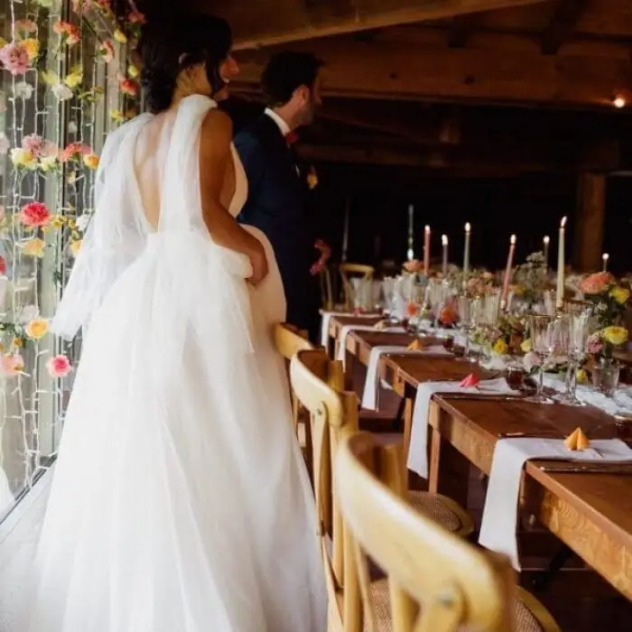
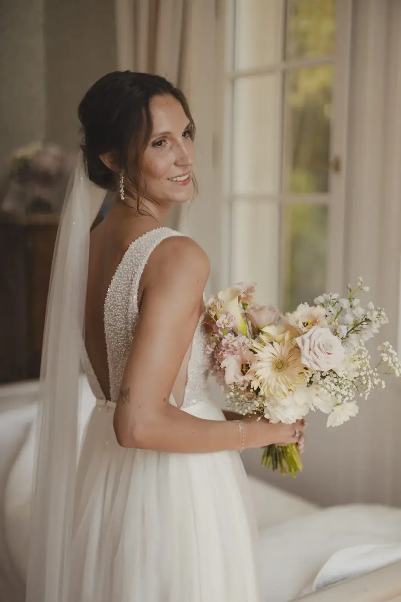
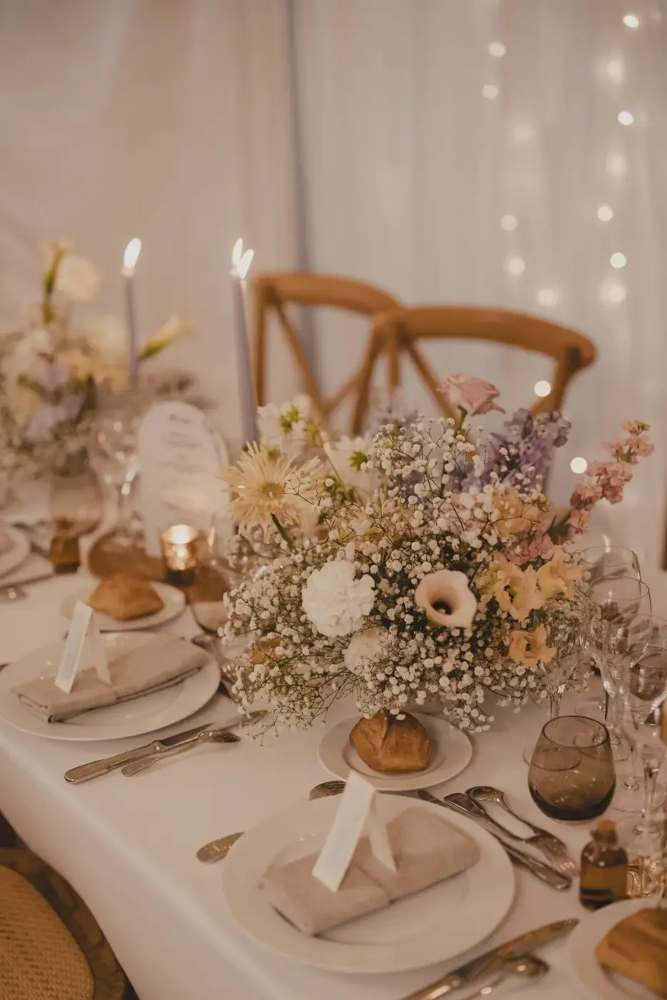

Every wedding is unique. What if your decor told your story, reflected your personality and created a real "wow" effect at first glance? On the Bassin d'Arcachon, a place already magical with its dunes, pine forests and ocean views, bespoke decor takes on its full meaning.
Calling on a bespoke, high-end wedding decorator isn't simply about placing a few flowers here and there or lining up chairs perfectly straight. It is about creating an immersive experience, transforming every venue, every detail and every space into a setting that truly reflects you. From an intimate ceremony on the beach to an elegant dinner in a villa overlooking the bay, everything is designed so that your guests are dazzled and your memories unforgettable.
The Bassin d'Arcachon: a perfect setting for a luxury wedding

The Bassin d'Arcachon charms with its diversity of landscapes and exceptional venues:
Villas overlooking the bay: for an elegant, intimate wedding.
Private beaches: ideal for a romantic sunset ceremony.
Panoramic restaurants and estates: perfect for a chic dinner or an evening of dancing.
Beyond the venues, the Bassin d'Arcachon offers a unique atmosphere: soft light, maritime pines, warm sand and reflections on the water create a natural backdrop that the decorator will enhance. The idea is to blend nature and elegance, for decor that respects the place while adding your personal touch.
The bespoke decor process
High-end decor isn't just about buying flowers and accessories. The creation happens in several stages:
- Meeting and understanding the couple
The decorator takes the time to understand your tastes, your story and your wishes. This first contact clarifies your expectations and defines the style of the wedding: bohemian chic, modern, elegant, romantic or bold. - Creating the mood board
Every project starts with a mood board that brings together colours, textures, flowers and styling ideas. It is the visual plan that will guide all the decor.

3. Selecting the decorative elements
The decorator carefully chooses every detail: floral arrangements, furniture, tableware, lighting, accessories, table runners… Everything is designed so that the venue becomes a stage that reflects you.
4. Installation and styling on the day
The high-end experience also depends on flawless set-up. Each element is installed with precision to create harmonious spaces, where every glance from your guests is caught by an unexpected, beautiful detail.
High-end services
A bespoke wedding decorator on the Bassin d'Arcachon can offer:
Complete venue decor: from the ceremony to the drinks reception, from dinner to the dance floor.
Unique set designs: every space is conceived as an immersive experience.
Personalised details: guest gifts, exclusive floral arrangements, table runners, decorative lighting.
Coordination with suppliers: so that florists, caterers and photographers are in perfect harmony with the decor.
Every detail counts in creating a high-end experience and turning an ordinary venue into an enchanting, memorable setting.
Testimonials and past weddings
Nothing illustrates a decorator's talent better than the weddings already created:
Marine and Antoine, a villa on the bay: romantic decor with floral arches, a petal aisle and soft lighting for dinner.
Mélissa and Hugo, a beach ceremony: elegant furniture, hanging lanterns and floral arrangements inspired by sunset colours.
Léa and Julien, a private estate: bohemian-chic decor with Persian rugs, fairy lights and finely decorated long tables.
Each project is unique and reflects the couple's personality while making the most of the natural beauty of the Bassin d'Arcachon.
Tips for choosing your bespoke wedding decorator
- Portfolio and past work: check whether the styles on offer match your vision.
- Creativity and adaptability: the decorator should suggest original ideas and know how to adapt to different venues.
- Proximity and availability: working with someone who knows the Bassin d'Arcachon is a real plus for coordinating logistics and styling.
- Communication and trust: a bespoke wedding requires a smooth, clear relationship between you and the decorator.
Tips for a successful luxury wedding on the Bassin d'Arcachon
Use local colours: the blue of the bay, the green of the pines, the beige of the sand.
Play with natural light: sunset, candles and fairy lights for a magical result.
Create themed spaces: a lounge corner, a cocktail bar, a photo corner…
Choose exclusive floral arrangements in keeping with the season and the venue.
It is also crucial to plan the logistics in advance: transport, accommodation, the weather and tides. Preparing every detail lets you fully enjoy the day without surprises. Finally, let yourself be carried by the moment and enjoy every emotion, because that is exactly what makes a wedding on the Bassin d'Arcachon unforgettable.


In short
Calling on a bespoke, high-end wedding decorator on the Bassin d'Arcachon turns your wedding into an unforgettable experience. Every venue, every detail and every space becomes a unique setting, perfectly suited to you as a couple and to your wishes.
With personalised decor, your wedding won't just be an event: it will be a memory, an emotion and a source of wonder for you and your guests. The Bassin d'Arcachon, with its exceptional landscapes, then becomes the ideal backdrop for styling that reflects you.
Turn your wedding into a bespoke masterpiece, and let the magic happen at first glance.
Lovely Day Event offers several services
Wedding planning
I step in at every stage of your preparations and guide you through your choices, bringing ideas and suggestions so that your wedding looks like no one but you.
On-the-day coordination
I will be the conductor of your day, managing the suppliers, the set-up of your decor and the smooth running of this beautiful day.
Wedding design
Creative and passionate, I am a certified Wedding Designer and I create a scenographic atmosphere that matches the theme of your wedding. Styling is included in the Signature package, or offered as an add-on to on-the-day coordination.